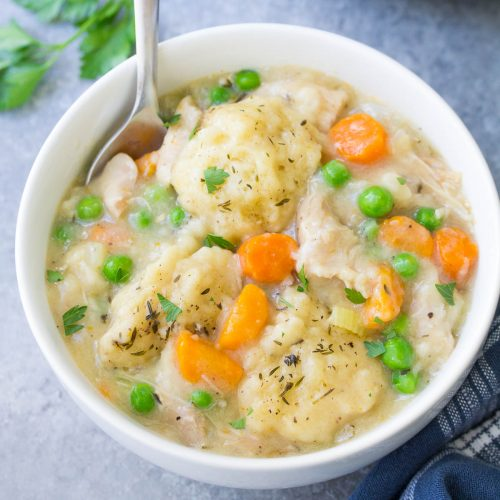

Instant Pot Chicken and Dumplings

Description
This Instant Pot chicken and dumplings recipe provides the richness of a long-simmered chicken stew without the
fuss of using a whole chicken.
It's basically chicken pot pie made in a pressure cooker rather than an oven.
Ingredients
- 1 cup diced onion
- 1 bay leaf
- 4 cups low-sodium chicken broth
Steps
- Pour buttermilk into dumpling mixture and stir until combined.
- While chicken is cooling, mash butter with flour in a small bowl to make a smooth paste; set aside.
- Make dumplings: Combine flour, baking powder, and salt in a medium bowl. Cut in cold butter with 2 knives or
a pastry blender until mixture resembles the texture of cornmeal.